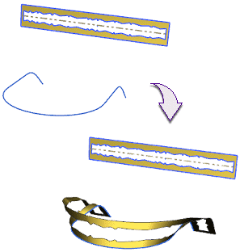

Estimated time to complete: 4–6 minutes
In this activity, you will create a global shaped feature, by mapping a surface from one curve to another.

Open the Modify a surface using Global Shaping by curve activity.